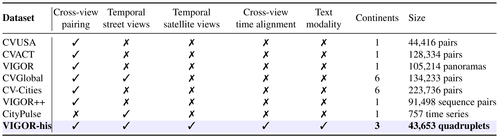
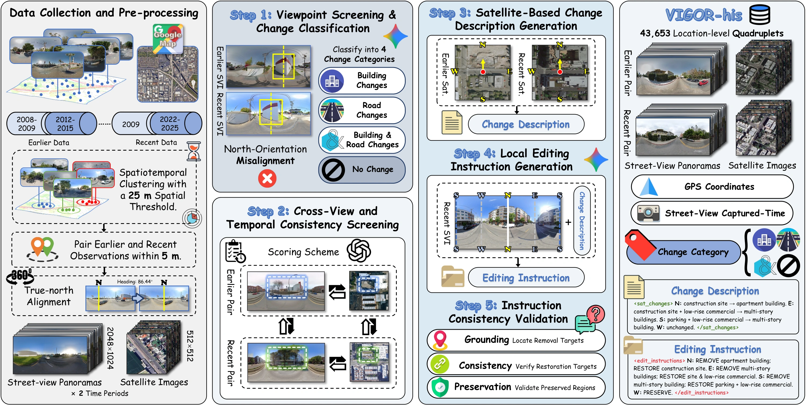
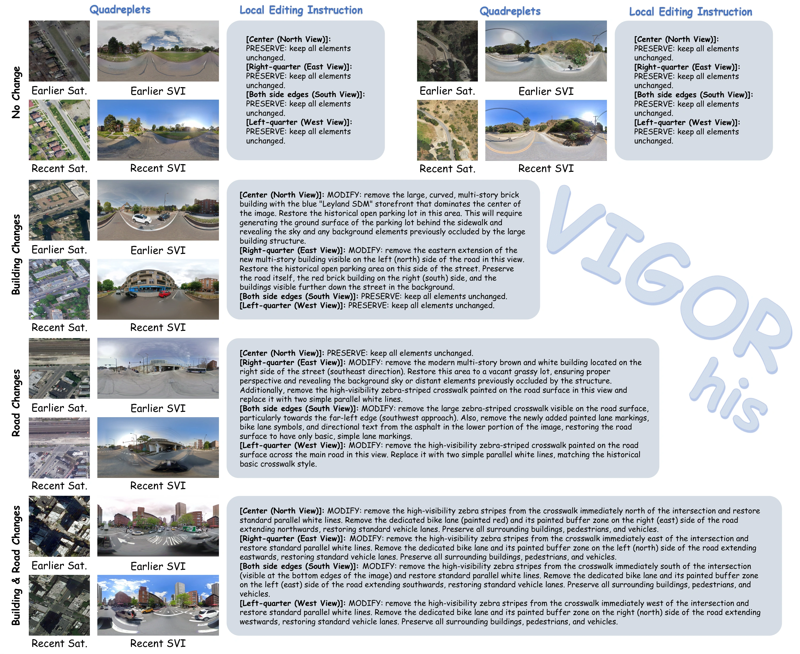
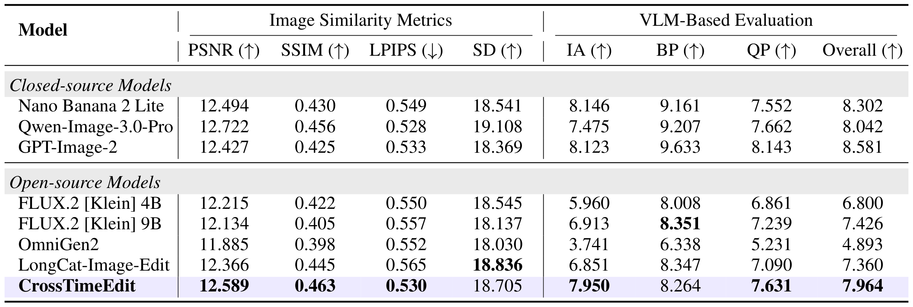
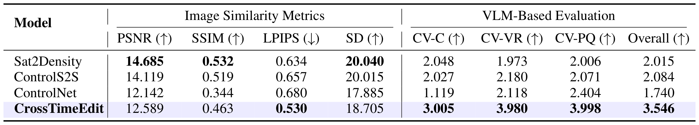
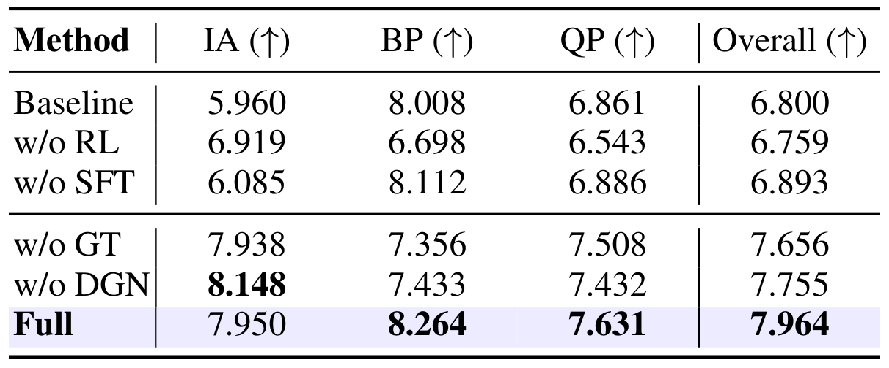
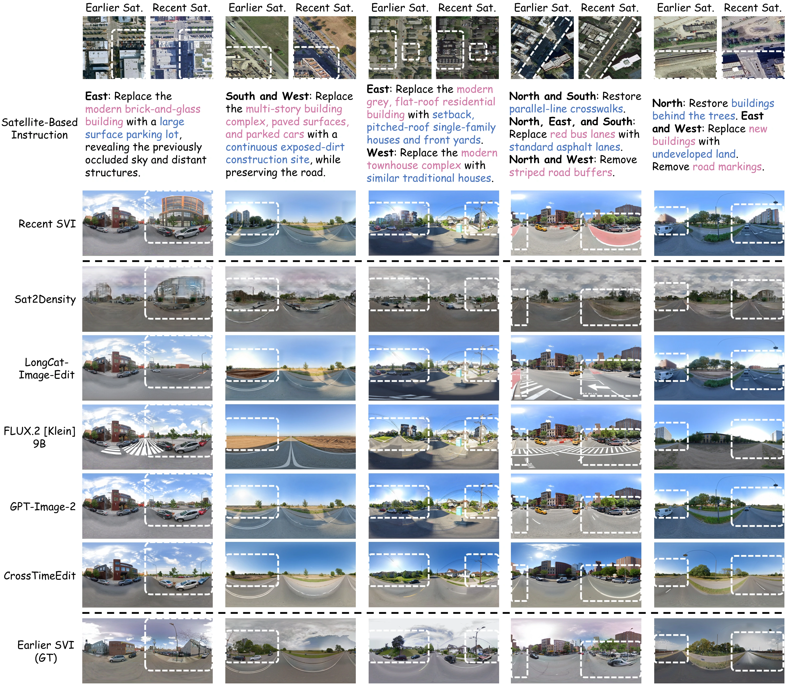
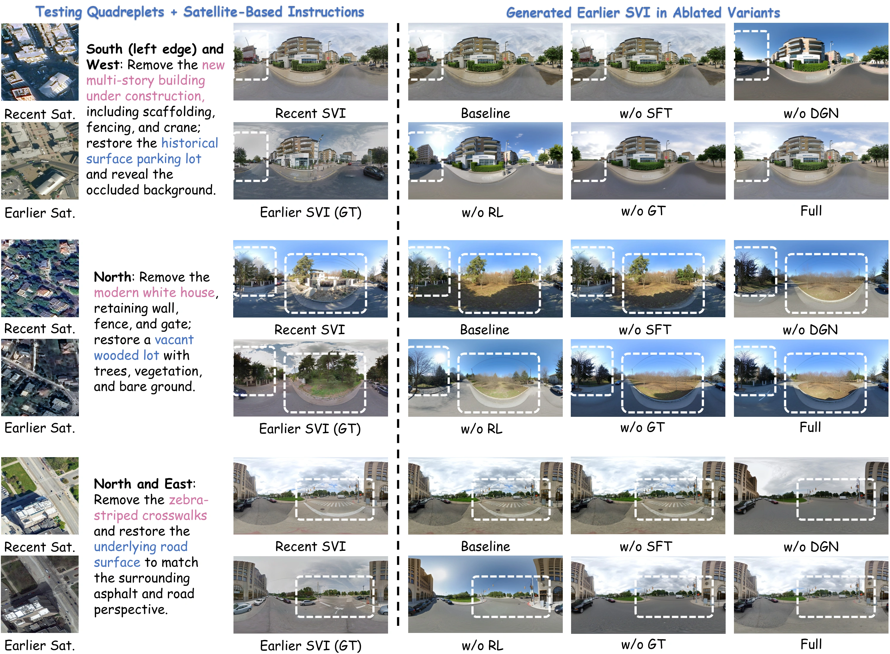
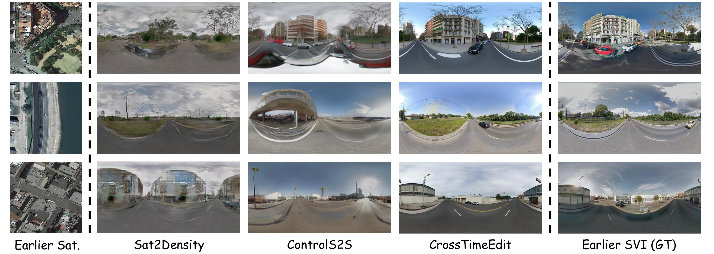

Data collection and pre-processing
Collect earlier and recent observations, pair images using panorama identifiers, capture times, and GPS coordinates, and align panoramas to a common north-facing convention.
A Decade-Spanning Cross-View Dataset and Reward-Guided Editing for Historical Street-View Generation
1 Sun Yat-sen University
* Equal contribution † Corresponding author
Historical street-view imagery records urban evolution, but uneven coverage leaves substantial gaps in historical records. Generating plausible past appearances requires restoring changed structures while preserving persistent scene content. We construct VIGOR-his, a decade-spanning cross-view dataset containing 43,653 location-level quadruplets across 11 cities on three continents. Its automated pipeline performs spatial pairing, consistency screening, change classification, and the generation and validation of satellite-based change descriptions and local editing instructions. Based on VIGOR-his, we propose CrossTimeEdit, a model that reformulates historical street-view generation as editing, using recent street views to constrain viewpoint and unchanged appearance and temporal satellite differences as change evidence. Starting from FLUX.2 [Klein] 4B, we train CrossTimeEdit through supervised fine-tuning (SFT) followed by online reinforcement learning (RL). We design three street-view editing criteria, namely Instruction Alignment (IA), Background Preservation (BP), and Quality and Physical Plausibility (QP), as both RL reward dimensions and evaluation metrics. We optimize this multi-reward objective using Within Group Relative Policy Optimization for flow-matching models (Flow-GRPO) with Group reward-Decoupled Normalization Policy Optimization (GDPO), which normalizes each reward dimension before aggregation. CrossTimeEdit improves overall performance across the three editing criteria by 17.12% over the pretrained baseline and outperforms cross-view generation models in scene consistency, visual realism, and perceptual quality.
![Comparison with existing cross-view datasets. VIGOR-his dataset provides four features to our CrossTimeEdit: (1) paired earlier and recent street and satellite views spanning approximately a decade; (2) acquisition-period matching and Gemini-based screening for cross-view scene consistency; (3) geographic coverage across 11 cities on three continents; and (4) change categories, satellite-based change descriptions, and local editing instructions, supporting historical street-view generation from cross-view change evidence.](assets/figure1.webp)
VIGOR-his provides 43,653 location-level cross-view quadruplets across 11 cities on three continents, pairing earlier and recent street and satellite views approximately a decade apart. Change categories, satellite-based change descriptions, and local editing instructions support historical street-view generation and location-level urban spatio-temporal analysis.
Table 1. Comparison with related cross-view and temporal datasets. ✓: provided; ✗: not provided in the cited release.


Collect earlier and recent observations, pair images using panorama identifiers, capture times, and GPS coordinates, and align panoramas to a common north-facing convention.
Screen viewpoint alignment, classify building and road changes, and retain quadruplets that pass the applicable cross-view and temporal consistency checks.
Describe temporal satellite changes along four viewing directions and translate them into local instructions specifying earlier states and unchanged content.
Validate instructions against paired street views to check whether requested edits agree with earlier observations and preserve unchanged regions.

CrossTimeEdit formulates historical street-view generation as local image editing. A recent street view constrains viewpoint and unchanged appearance, while a satellite-derived instruction specifies the earlier states of changed regions. Earlier street views provide supervision and evaluation targets, but are not generation inputs.
We train LoRA adapters on FLUX.2 [Klein] 4B using VIGOR-his. Changed samples teach historical editing, while no-change samples provide identity supervision for content preservation.
Instruction Alignment (IA), Background Preservation (BP), and Quality and Physical Plausibility (QP) provide distinct RL reward dimensions and street-view editing evaluation metrics.
Flow-GRPO updates the SFT-initialized LoRA policy using VLM-scored candidates. GDPO normalizes each reward dimension independently before aggregation to account for their unequal variability.
Table 2. Quantitative comparison with general image editing models on VIGOR-his.

Table 3. Quantitative comparison with cross-view generation models on VIGOR-his.

Table 4. Ablations of CrossTimeEdit under the same VLM protocol.




@misc{lu2026crosstimeedit,
title = {CrossTimeEdit: A Decade-Spanning Cross-View Dataset and Reward-Guided Editing for Historical Street-View Generation},
author = {Lu, Hanwen and He, Jun and Yang, Mingjia and Wei, Hao and Huang, Jinhao and Lin, Yi and Zhang, Xiang},
year = {2026},
note = {arXiv preprint}
}